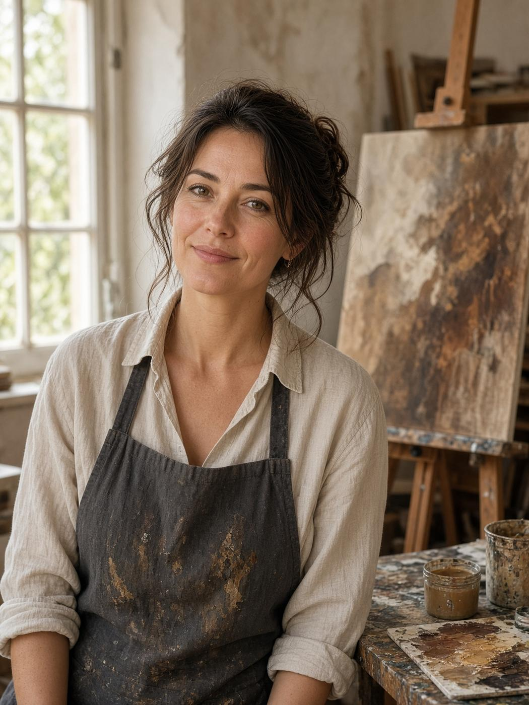

Volám sa Simona Visocká a som samouk. Nemám vyštudovanú žiadnu umeleckú školu, no vyštudovala som učiteľstvo biológie a geografie – a práve odtiaľ pramení môj silný vzťah k prírode, krajine a miestam, ktoré ma dokážu zaujať svojou atmosférou.
Kreslenie ma sprevádzalo už od detstva. Počas školy som nakreslila niekoľko portrétov ceruzkou, no čaru farieb som naplno podľahla až počas materskej dovolenky. Som mama dvoch detí a maľovanie sa pre mňa postupne stalo priestorom, kde môžem tvoriť, objavovať a prenášať na plátno to, čo som kedysi študovala.
Na začiatku som maľovala podľa návodov na YouTube. Fascinovalo ma sledovať umelcov, ktorí dokázali preniesť krajinu na plátno tak, že pôsobila takmer živo. Postupne som však začala hľadať vlastnú cestu a spôsob, akým sa chcem výtvarne vyjadrovať.
Tak som objavila 3D pastu. Najskôr som sa venovala najmä rastlinnej a prírodnej tematike, neskôr som začala experimentovať s rôznymi motívmi a postupne som si vytvorila vlastný štýl. Baví ma maľovať krajinu, prírodu, portréty aj miesta, ktoré som navštívila alebo ktoré ma niečím zaujali.
Osobitné miesto v mojej tvorbe však majú slovenské miesta. Jedného dňa mi napadlo dať konkrétnym zákutiam, hradom či prírodným scenériám plastickú, hmatateľnú podobu. Práve spojenie môjho vzťahu k slovenskej prírode s tým, čo som sa naučila počas štúdia na vysokej škole, mi otvorilo úplne nový spôsob tvorby.
Dnes ma baví hľadať neobyčajné zobrazenia, dramatickú oblohu, svetlo a rôzne atmosférické javy, ktoré dokážu známu krajinu ukázať z úplne iného pohľadu. 3D pasta dáva mojim obrazom ďalší rozmer – reliéf vystupuje z plátna a vytvára podobu, ktorej sa dá takmer dotknúť.
Maľujem po večeroch, keď mi to čas popri deťoch dovolí. Každý obraz vzniká postupne, vlastnými rukami a s veľkou dávkou trpezlivosti.
A čo ďalej? V roku 2027 chystám svoju prvú autorskú výstavu, kde si budete môcť moje reliéfne obrazy pozrieť naživo.
Tvorím bez vyštudovanej umeleckej školy, ale práve sloboda učiť sa vlastnou cestou mi umožnila nájsť techniku, témy a spôsob vyjadrenia, ktoré sú dnes moje.
My name is Simona Visocká and I am self-taught. I do not have a formal art education, but I studied biology and geography teaching – and that is where my strong connection to nature, landscape and places that captivate me with their atmosphere comes from.
Drawing has accompanied me since childhood. During school I drew several pencil portraits, but I fully surrendered to the magic of colour during maternity leave. I am a mother of two and painting gradually became a space where I can create, explore and transfer onto canvas what I once studied.
At the beginning I painted following YouTube tutorials. I was fascinated by artists who could transfer a landscape onto canvas so that it almost seemed alive. Gradually, however, I began to search for my own path and the way I want to express myself artistically.
That is how I discovered 3D paste. At first I focused mainly on plant and nature themes, later I began experimenting with different motifs and gradually developed my own style. I enjoy painting landscapes, nature, portraits and places I have visited or that somehow intrigued me.
A special place in my work belongs to Slovak locations. One day it occurred to me to give specific corners, castles or natural scenery a plastic, tangible form. The combination of my relationship to Slovak nature with what I learned during university studies opened up a completely new way of creating.
Today I enjoy searching for unusual depictions, dramatic skies, light and various atmospheric phenomena that can show a familiar landscape from a completely different perspective. 3D paste gives my paintings another dimension – the relief rises from the canvas and creates a form that you can almost touch.
I paint in the evenings, when time with the children allows. Every painting is created gradually, by my own hands and with a great deal of patience.
What next? In 2027 I am preparing my first solo exhibition, where you will be able to see my relief paintings in person.
I create without a formal art school education, but it is precisely the freedom to learn my own way that allowed me to find the technique, themes and means of expression that are mine today.